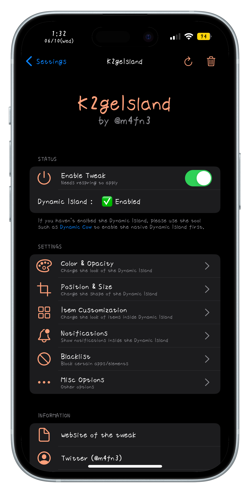
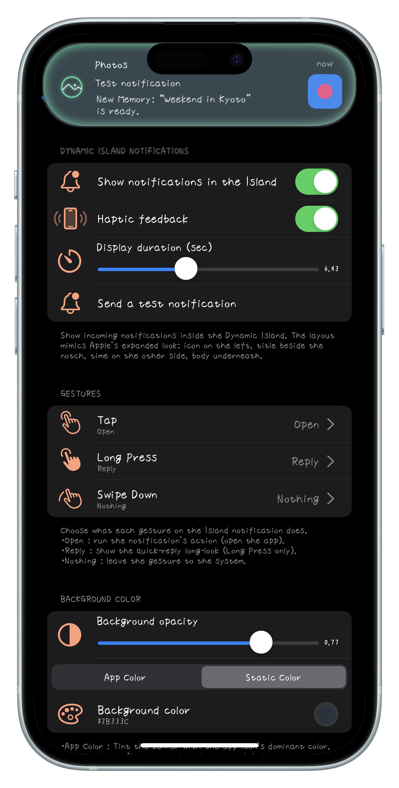
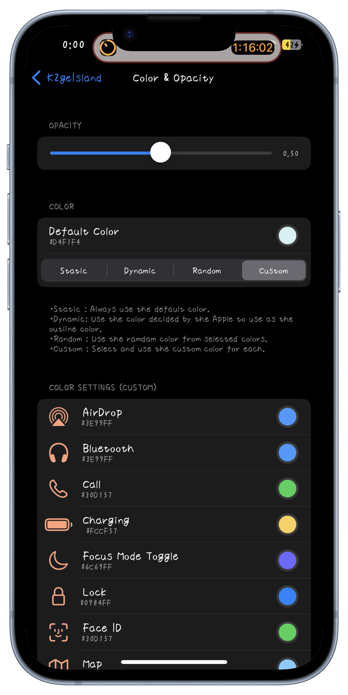
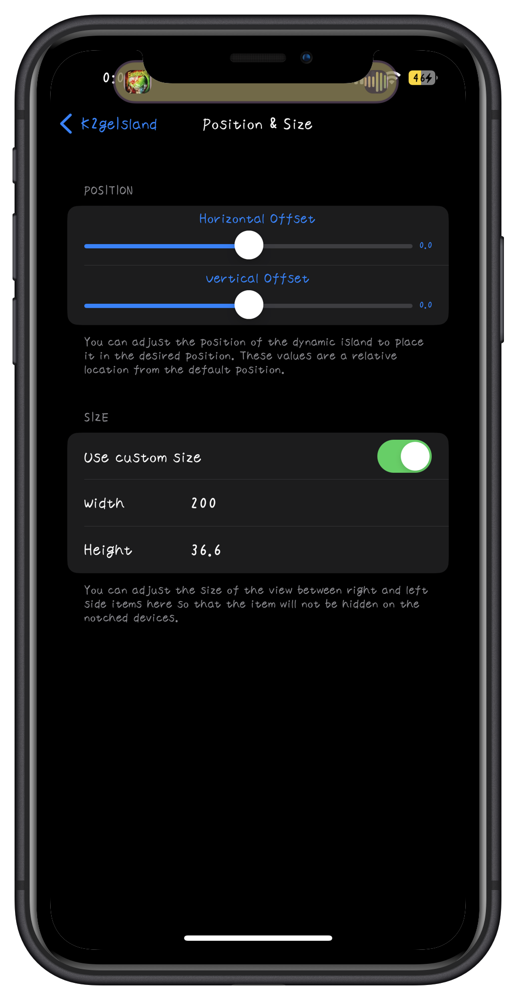
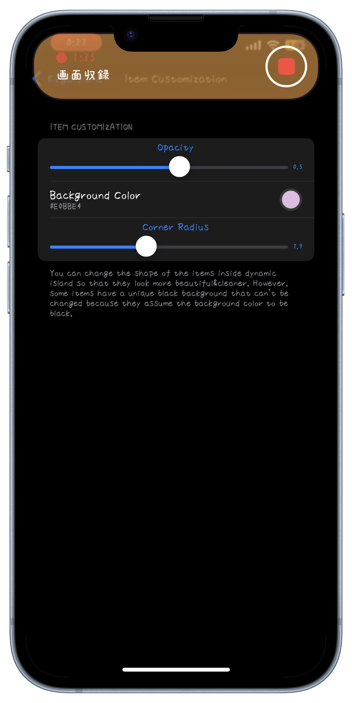
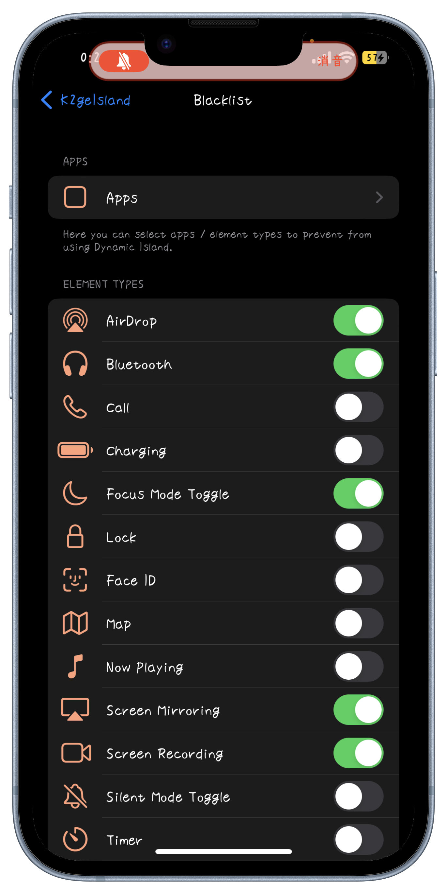
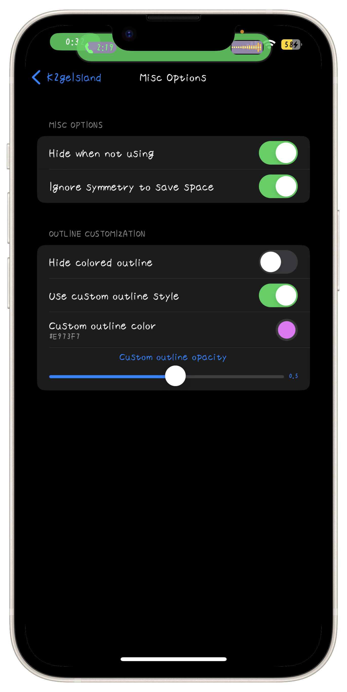

Home
K2geIsland brings notifications into Dynamic Island and gives you detailed control over its colors, opacity, position, size, content, and behavior. It runs on iPhones with iOS 16 ~ 17 on rootful, rootless, or roothide jailbreaks and needs a native Dynamic Island or a compatible Dynamic Island enabler.







iPhones running iOS 16 ~ 17 on rootful, rootless, or roothide jailbreaks.
A native Dynamic Island or a compatible Dynamic Island enabler is required.
Use the “Buy” button above to open the checkout page, then review the purchase details carefully.
PayPal and credit cards are accepted.
* For Chinese payment methods, contact the authorized reseller on WeChat: henan-0318.
1. Purchase a license and copy your license key.
2. Add this repository, then install K2geIsland.
3. Open K2geIsland from the Settings app.
4. Enter your license key and activate the tweak.
* After an update, activation must be refreshed, but the key does not need to be entered again.
5. On a notched device, enable Dynamic Island using DynamicCow or another compatible tool if it is not already enabled.
* For activation help, contact @m4fn3 on Twitter or email m4fn3q@gmail.com.
* One license covers up to 2 devices owned by you. Licenses are not transferable.
Show incoming notifications inside Dynamic Island with the app icon or contact avatar, message content, time, and supported attachments.
Choose what tap, long press, and swipe down do, then adjust display duration and haptic feedback.
Match the banner to the source app or use your own background color, opacity, glow, corner radius, spacing, icon size, and text layout.
Set the Island's opacity and choose between four color modes.
・Static: Always use one favorite color.
・Dynamic: Follow the system-provided outline color.
・Random: Rotate through up to 10 colors you select.
・Custom: Assign different colors to supported activity types.
* Supported types include AirDrop, Bluetooth, calls, charging, Focus, Lock, Face ID, Maps, Now Playing, Screen Mirroring, Screen Recording, Silent Mode, Timer, and Voice Memos.
Move Dynamic Island horizontally or vertically and resize its center area without stretching the activity content.
This helps keep content visible around different notch shapes and screen layouts.
Choose which supported activity types may appear in Dynamic Island and blacklist individual apps when needed.
Change activity opacity, background color, and corner radius for a cleaner or more distinctive appearance.
* Some system activities assume a black Island background and contain colors that cannot currently be overridden.
Hide Dynamic Island while idle, ignore symmetrical spacing to save status-bar room, or customize and hide the colored outline.
Only when a user reports that the tweak doesn't work on iOS versions that are explicitly mentioned as supported on the website within 48 hours after the purchase, we'll accept your refund request. When you meet these conditions and want to request a refund, please send us a message with your device information, details of the problem and purchase information.
iPhones running iOS 16 to 17 on rootful, rootless or roothide jailbreaks.
A native Dynamic Island or a compatible Dynamic Island enabler is required. On a notched device, enable Dynamic Island with DynamicCow or another compatible tool if it is not already enabled.
Colors, opacity, position, size, content and behavior of Dynamic Island, plus notifications shown in it with configurable gestures, appearance, duration and haptics.
One license covers up to 2 devices owned by you. Licenses are not transferable.
v1.0.1: Added notifications in Dynamic Island with configurable gestures, appearance, duration, and haptics.
v1.0.0: First release